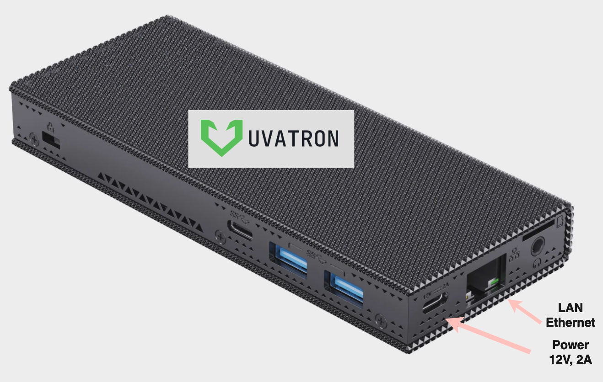

Начало работы с контроллером Uvatron 3000PRO
Добро пожаловать в руководство. Этот раздел познакомит вас с основами использования систем UVATRON.
Включение
Подключите блок питания к контроллеру через разъем type-c, который находится рядом с разъемом ethernet. Включите блок питания в сеть 220В. Контроллер включится автоматически после подключения питания.
Подключите кабель ethernet для взаимодействия с контроллером. По умолчанию на контроллере установлены статические настройки сетевого интерфейса:
IP Адрес:
192.168.1.250Маск:
255.255.255.0
Взаимодействие с контроллером осуществляется только через локальную сеть, других методов нет. 
{kind=link}
Блок питания
{kind=link}
Сетевой коммутатор
{kind=link}
Варианты подключения
Настройка
Чтобы получить доступ к настройкам контроллера, ваш ноутбук/ПК и контроллер должны находиться в одной сети. Зайдите в сетевые настройки вашего ноутбука/ПК и задайте любой адрес из той же подсети, отличный от адреса контроллера.
Пример:
{kind=link}
Настройка IP Адреса сетевого интефрейса ethernet на ПК
Для настройки контроллера откройте в браузере страницу 192.168.1.250:8001.
{kind=link}
Страница авторзации
{kind=link}
Авторизация
Примечание
Для авторизации на контроллере по умолчанию используется:
логин -
adminпароль -
admin
Введите логин - admin, пароль - admin. в меню авторизации и нажмите кнопку «Авторизоваться»
{kind=link}
Авторизация
После успешной авторизации загрузится основная веб-страница контроллера.
{kind=link}
Авторизация
Панель управления
Панель управления состоит из следующих разделов:
Открыть
UI-Designer — переход на страницу создания интерфейса.
U-Logic — переход на страницу создания логики управления.
UI-Panel — переход на страницу созданного интерфейса управления.
Настроить
Дата и время — позволяет настроить дату и время.
Сетевой интерфейс Ethernet — позволяет установить IP адрес контроллера.
Пароль — позволяет изменить пароль доступа к странице «Панель управления» и U-Logic (UI-Designer не имеет пароля и включается либо отключается по необходимости в меню «ДАТЬ КОМАНДУ»).
Дать команду
Перезапустить U-Logic — перезапускает U-Logic и выключает проект в U-Logic.
UI-Designer — включает или отключает UI-Designer. По умолчанию UI-Designer выключен. Обязательно требуется выключать после завершения работы над интерфейсом управления UI-Panel.
Перезагрузить контроллер — перезагружает контроллер управления.
Сбросить до заводских настроек
Выполнить сброс всех настроек и конфигураций к заводским (теряются все данные)
Предупреждение
Выполняет сброс настроек контроллера, удаляются всех пользовательские файлы и программы. Возврат контроллера в заводское состояние без возможности восстановления данных. Будьте внимательны, не забывайте делать резервные копии своих проектов на внешние накопители данных.
Файловый менеджер
Скачать проект — скачивание проекта только для UI-Designer. Проекты U-Logic необходимо скачивать непосредственно в U-Logic.
Загрузить проект — загрузка проекта только для UI-Designer. Проекты U-Logic необходимо загружать непосредственно в U-Logic.
Загрузить прошивку — обновление прошивки контроллера.
{kind=link}
Файловый менеджер